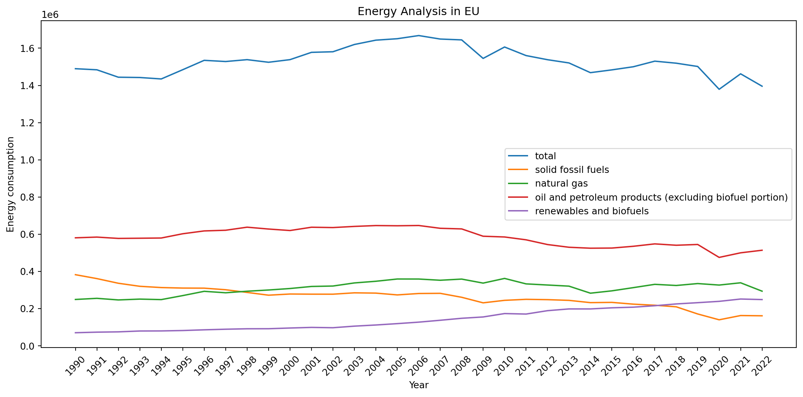

import sys
from pathlib import Path
PROJECT_ROOT = Path().resolve().parents[1]
sys.path.append(str(PROJECT_ROOT))
from models.data_analysis.analysis_app import AnalysisApp
data_path = PROJECT_ROOT / "models" / "data_analysis" / "data" / "file.csv"
app = AnalysisApp(str(data_path))
df = app.run()
df.head()C:\Users\admin\Uni\project_OOP\portfolio\models\data_analysis\visualizer.py:21: SettingWithCopyWarning:
A value is trying to be set on a copy of a slice from a DataFrame.
Try using .loc[row_indexer,col_indexer] = value instead
See the caveats in the documentation: https://pandas.pydata.org/pandas-docs/stable/user_guide/indexing.html#returning-a-view-versus-a-copy
df[year_cols] = df[year_cols].replace(",", ".", regex=True)
C:\Users\admin\Uni\project_OOP\portfolio\models\data_analysis\visualizer.py:22: SettingWithCopyWarning:
A value is trying to be set on a copy of a slice from a DataFrame.
Try using .loc[row_indexer,col_indexer] = value instead
See the caveats in the documentation: https://pandas.pydata.org/pandas-docs/stable/user_guide/indexing.html#returning-a-view-versus-a-copy
df[year_cols] = df[year_cols].astype(float)
| state | energy_type | 1990 | 1991 | 1992 | 1993 | 1994 | 1995 | 1996 | 1997 | ... | 2013 | 2014 | 2015 | 2016 | 2017 | 2018 | 2019 | 2020 | 2021 | 2022 | |
|---|---|---|---|---|---|---|---|---|---|---|---|---|---|---|---|---|---|---|---|---|---|
| 0 | total_eu | total | 1489821.417 | 1483949.536 | 1444075.807 | 1442531.699 | 1434757.905 | 1484378.791 | 1534802.536 | 1528428.102 | ... | 1520808.237 | 1468595.977 | 1483551.593 | 1500323.598 | 1530359.262 | 1519449.646 | 1501827.238 | 1379224.526 | 1462342.209 | 1395822.651 |
| 1 | total_eu | solid fossil fuels | 382922.722 | 361880.203 | 336863.263 | 320536.148 | 313746.202 | 310986.494 | 310523.440 | 302061.944 | ... | 244923.871 | 232764.838 | 234081.145 | 224585.773 | 218775.373 | 210260.473 | 171825.350 | 140531.749 | 163365.542 | 162043.628 |
| 2 | total_eu | natural gas | 249793.009 | 255840.624 | 247244.030 | 251696.870 | 249029.582 | 270556.005 | 293533.977 | 285729.899 | ... | 321384.442 | 283520.800 | 296085.335 | 313360.871 | 331041.873 | 324904.590 | 335211.448 | 327184.846 | 339376.140 | 294340.743 |
| 3 | total_eu | oil and petroleum products (excluding biofuel ... | 581083.758 | 584913.886 | 577831.806 | 578825.515 | 579993.487 | 602859.846 | 618086.015 | 621714.262 | ... | 530309.555 | 525234.824 | 526020.790 | 535565.564 | 548444.600 | 541134.880 | 545257.431 | 475784.781 | 500454.543 | 514268.023 |
| 4 | total_eu | renewables and biofuels | 71047.951 | 74104.623 | 75711.453 | 80284.283 | 80709.539 | 82824.280 | 86663.640 | 89869.700 | ... | 198907.464 | 198892.885 | 204911.552 | 208335.663 | 216118.245 | 225742.545 | 232513.016 | 239664.170 | 252129.687 | 249217.340 |
5 rows × 35 columns